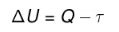
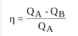

1° Lei da Termodinâmica
A primeira lei da Termodinâmica representa a aplicação do princípio de conservação da energia a sistemas
que podem trocar energia com a vizinhança
por calor.
Esta lei, assim como o princípio de conservação da energia, não contém restrições quanto à direção do fluxo de energia entre dois sistemas.
Essa conservação de energia acontece sob as formas de calor e de trabalho. Ela faz com que um sistema possa conservar e transferir energia, ou seja,
a energia pode sofrer aumento,
diminuição ou permanecer constante.
Fórmula:

ΔU – variação de energia interna (cal ou J)
Q – calor (cal ou J)
τ – trabalho (cal ou J)
2° Lei da Termodinâmica
A Segunda Lei da Termodinâmica trata da transferência de energia térmica.
Isso quer dizer que ela indica as trocas de calor que têm tendência para igualar
temperaturas diferentes (equilíbrio térmico),
o que acontece de forma espontânea. Dentre as duas leis da termodinâmica, a segunda é a que tem maior aplicação
na construção
de máquinas e utilização na indústria, pois trata diretamente do rendimento das máquinas térmicas.
Fórmula:

η: rendimento
QA: calor fornecido por aquecimento
QB: calor não transformado em trabalho
Aplicações das máquinas térmicas no nosso dia a dia
As máquinas térmicas estão presentes em nosso dia a dia e
são fundamentais para o funcionamento de diversas
tecnologias, como: motores de combustão interna de
motores
movidos a gasolina, álcool, diesel, GLP e querosene,
máquinas movidas a vapor como: locomotivas, máquinas de
tecer e usinas termoelétricas,
refrigeradores e ar condicionado como: máquinas térmicas invertidas, chamadas
de refrigeradores ou bombas de calor.